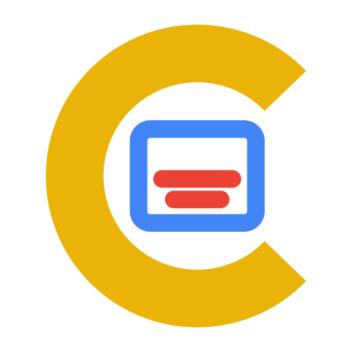

carino
aldis
asobi

branding
compass
currency
cve
cybercity
dcm
desk
dicom
distro

files
fiscal
font

hardware
hash
images
jellyfish
kanban
law
learn
music
netplan
offline
password
ping
quote
retina
setup
software
stocks
subs

teleprompter
test
time
topo
tv
vitae